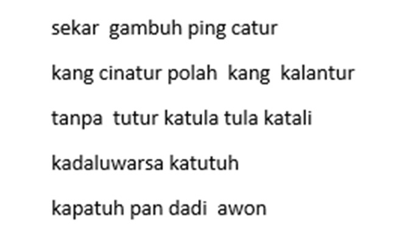
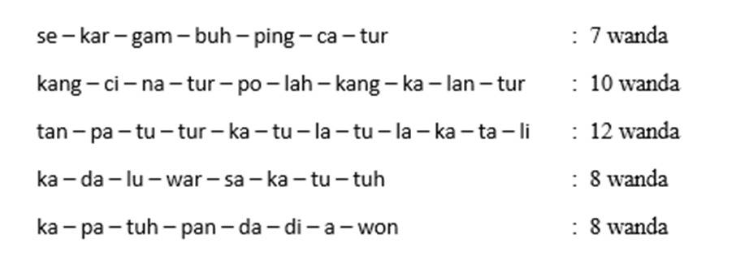

Tembang Macapat
Pengertian
Tembang Mocopat inggih sawijining tradhisi dalem sastra jawa kang kalebu carita utawa gending kanggo ngandhut kawruh lan ajaran moral. Mocopat kalebu tembang lan lirik kang diarani "Mocopat" kanggo nggayuh lan ngawruhaken prilaku kang apik lan bening ing ngisor iku ora nganti manis. Nalika kita belajar nembang tembang mocopat, kita bakal nyinau nilai-nilai kehidupan, kasihatan, kejumbuh lan kewawancaraan. Jenisipun tembang mocopat niku salah sijine yaiku, tembang gambuh sing bakal di ajar ing kelas 7 niki.
Tembang Gambuh
Tembang Gambuh iku salah siji jenis tembang macapat ing sastra Jawa. Tembang kaya iki biasane digunakake kanggo nembangaken cerita-cerita sing njupuk saka wiracarita Hindu, kaya Mahabharata utawa Ramayana. Tembang Gambuh minangka bentuk tembang macapat sing luwih luwih padat lan kompleks, kang nggawé nggumunake lan nandhang konstruksi sastra sing apik. Biasane, tembang kaya iki diiringi kandhang gamelan utawa instrumen musik Jawa liyane. Tembang Gambuh penting kanggo melestarikan budaya Jawa lan ningkatin apresiasi sastra lan seni tradisional.
Pangikete Tembang Macapat
1. Guru Gatra Guru gatra yaiku cacahing larik/baris saben satembang wutuh. Tembang Gambuh guru gatrane ana 5.
2. Guru wilangan Guru wilangan yaiku cacahing wanda saben larik. Guru wilangane tembang Gambuh yaiku 7, 10, 12, 8, 8.
3. Guru Lagu Guru lagu yaiku tibaning swara (dhong dhing) ing pungkasan gatra. Guru lagune tembang Gambuh yaiku u/u/i/u/o.